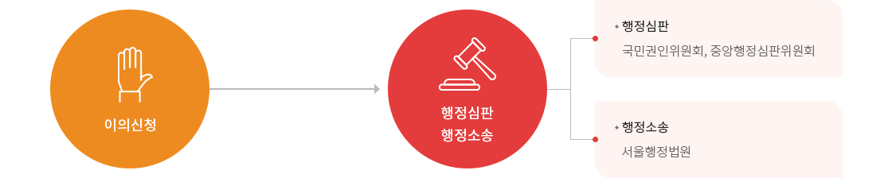
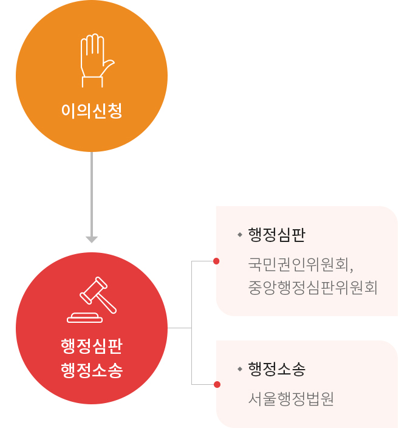

불복구제절차
불복구제절차


- 이의신청
- 행정심판 행정소송
-
- 행정심판 - 국민권인위원회, 중앙행정심판위원회
- 행정소송 - 서울행정법원
이의신청
- 청구인이 정보공개와 관련한 공공기관의 비공개 또는 부분공개의 결정에 대하여 불복이 있는 때에는 공공기관으로터 정보공개여부의 결정통지를 받은 날 또는 비공개의 결정이 있는 것으로 보는 날부터 30일 이내에 당해 공공기관에 문서로 이의신청을 할 수 있습니다.
- 공공기관은 이의신청을 받은 날부터 7일 이내에 그 이의신청에 대하여 결정하고 그 결과를 청구인에게 지체없이 문서로 통지하여야 합니다.
- 이의신청은 “서면”으로 하여야 하며 신청인의 이름, 주민등록번호 및 주소, 이의 신청의 대상이 되는 정보의 공개여부에 대한 결정통지의 내용, 이의신청의 취지 및 이유, 정보공개여부의 결정통지를 받은 날 또는 비공개결정이 있는 것으로 보는 날 등이 포함되어야 합니다.
행정심판
- 청구인이 정보공개와 관련한 공공기관의 결정에 대하여 불복이 있는 때에는 행정심판법이 정하는 바에 따라 행정심판을 청구할 수 있습니다.
행정소송
- 청구인이 정보공개와 관련한 공공기관의 결정에 대하여 불복이 있는 때에는 행정심판법이 정하는 바에 따라 행정심판을 청구할 수 있습니다.
담당자 안내
| 구분 | 담당 | 연락처 |
|---|---|---|
| 정보공개 접수처 | 성과평가팀 | Tel 02-399-7304 / Fax 02-399-6904 |
| 방문 및 우편 | 서울특별시 종로구 종로 14 (서린동), 한국무역보험공사 (우 03187) | |